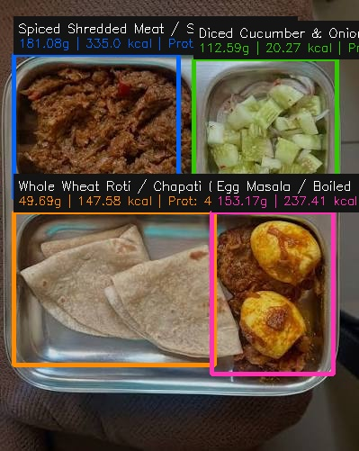

Cibis dissects food down to cellular and molecular levels — estimating 3D mass, USDA macronutrients, and postprandial blood glucose impact on scroll.
As you scroll down, the 3D food model separates into its core physiological layers, revealing exact nutrient distribution in real time.
Rich in bioflavonoids, hesperidin, and insoluble dietary fiber matrix (3.4g).
87% structured biological water, with 7.1g low-glycemic fructose & glucose.
Delivers 40.6mg active ascorbic acid (Vitamin C) and 181mg bioavailable potassium.
Select between pre-scanned test cases to view instant bounding box instance segmentations, 3D mass estimation, and nutrient profiles.

Simulates dynamic postprandial glucose curves based on protein, fiber, and fat ratios blunting the gastric emptying rate.
High protein (61.6g) and fiber slow digestion by 4.05x, eliminating glucose spikes.